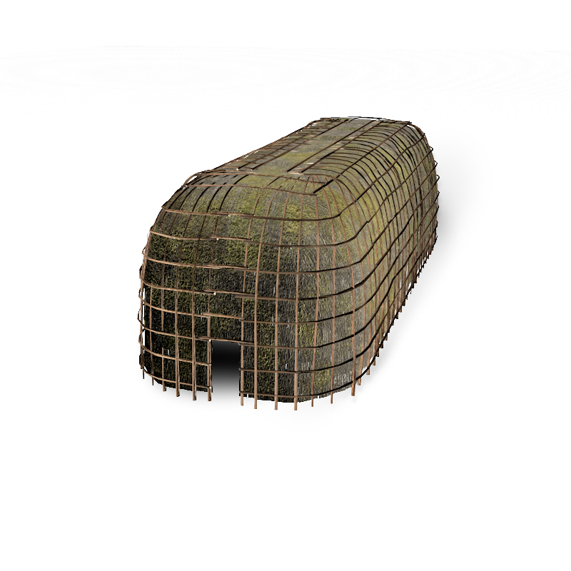

Logo

Long houses
The Lawson Site
Come and visit the reconstructed longhouse and see for yourself….
History of the Lawson Site
The Lawson site is a 500-year-old village situated on a flat plateau overlooking Medway River and Snake Creek in northwest London. Ancestral communities selected this location for its defensible characteristics, access to water, and proximity to a wide variety of animals, fish and wild plants. The site is 5 acres in size and was occupied by an estimated 2000 people. Three-quarters of the Lawson site remains covered by trees and is undisturbed by previous farming or archaeological digs.
View it in AR
Archaeology on the Lawson Site
Although the site has been excavated for 150 years, the first detailed scientific excavations began in the early 1920s by William J. Wintemberg. Wilfrid and Amos Jury later excavated portions of the site in the 1930s and 1940s. The first modern excavation was conducted by William D. Finlayson with UWO’s archaeological field school in 1976. Annual excavations took place until the mid 2000’s and have contributed to our understanding of this complex site. Currently, we are focusing on the rehabilitation of the site
Native Canadian Lawson Longhouse
Lawson Site: Statement of Significance
In 2004 the Lawson Site was officially placed on the Canadian Register of Historic Places; it being the only archaeological site in Ontario and one of only three in Canada to be so designated. The statement of significance leading up to that designation now appears on the Federal Government’s Historic Places website. Highlighting some major points:
- One of only a few village sites where earthworks are preserved
- Excavations have recovered over 30,000 artifacts and the remains of 19 longhouses, 30 middens, and a palisade along the northern half of the site
- It was home to an estimated 2000 people and occupied year round.
- May have served as regional centre for other populations